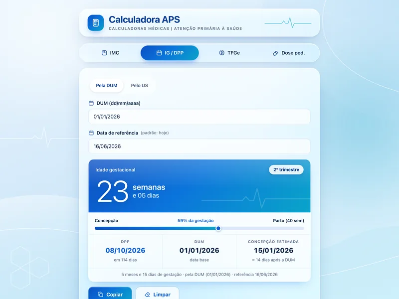
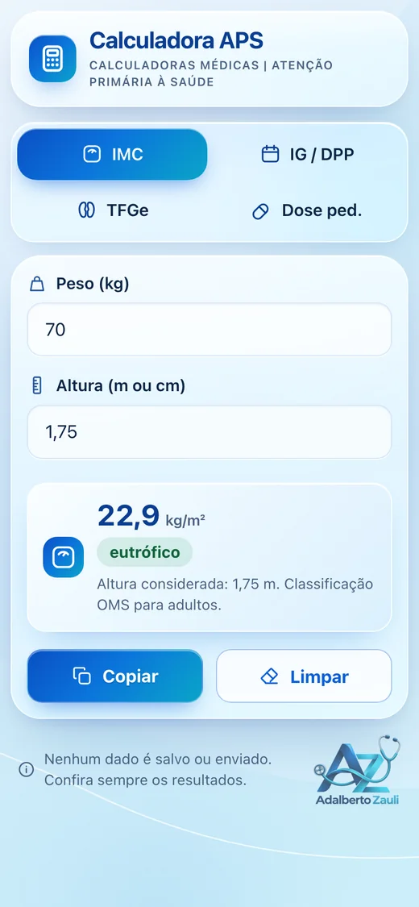
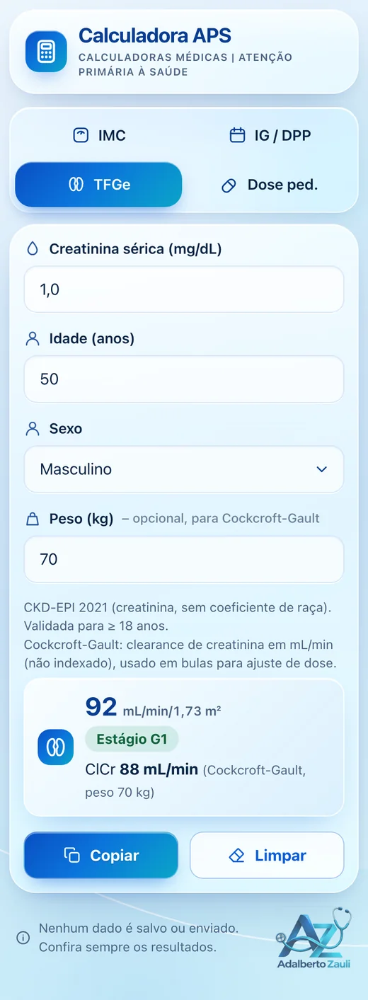
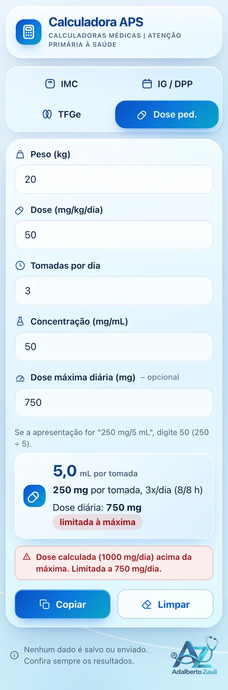
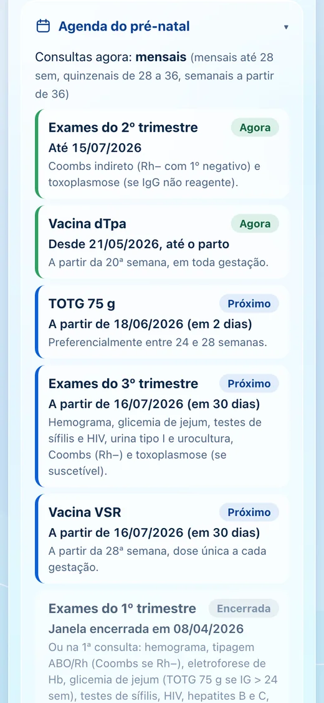

Calculadora APS.
Calculadoras clínicas para a Atenção Primária, pensadas para funcionar ao lado do prontuário: resposta em tempo real, texto pronto para colar na evolução, sem cadastro e sem envio de dados de pacientes.Clinical calculators for primary care, designed to sit beside the electronic health record: real-time results, ready-to-paste notes, no sign-up and no patient data sent anywhere.

Captura da ferramenta com valores de exemplo; nenhum dado de paciente.Tool screenshot using sample values; no patient data.
A necessidade surgiu na rotina da Atenção PrimáriaThe need arose in everyday primary care
O problemaThe problem
Como médico de família, eu precisava de contas rápidas que coubessem ao lado do prontuário eletrônico, dessem a resposta enquanto eu digito e gerassem um texto pronto para a evolução, sem login, sem anúncios e sem enviar dados de pacientes.As a family physician, I needed quick calculations that fit next to the electronic health record, gave the answer as I typed and produced a note ready for the chart, with no login, no ads and no patient data sent anywhere.
O objetivo do produtoProduct objective
Reunir em uma página leve as contas mais usadas no dia a dia: funcionando no computador e no celular, inclusive sem internet, com validação gentil das entradas e resultados que podem ser copiados com um clique.Bring the most common everyday calculations into one lightweight page that works on desktop and phone, even offline, with gentle input validation and results that can be copied in one click.
Quatro calculadoras em uma só páginaFour calculators on a single page
IMCBMI
Peso e altura (em metros ou centímetros), com classificação da OMS para adultos e o nome da faixa sempre escrito, sem depender só da cor.Weight and height (metres or centimetres), with the WHO adult classification and the category always written out, not relying on colour alone.
Idade gestacional e DPPGestational age and due date
Pela DUM ou pelo ultrassom, com trimestre, DPP, concepção estimada e agenda do pré-natal baseada na Caderneta Brasileira da Gestante (MS, 2026).By last menstrual period or ultrasound, with trimester, due date, estimated conception and a prenatal schedule based on the Brazilian Pregnancy Booklet (MoH, 2026).
TFG estimadaEstimated GFR
CKD-EPI 2021 com estágio KDIGO e, se o peso for informado, clearance de creatinina por Cockcroft-Gault.CKD-EPI 2021 with KDIGO stage and, if weight is entered, creatinine clearance by Cockcroft-Gault.
Dose pediátricaPediatric dose
Dose por peso (mg/kg/dia), por tomada e volume em mL; limita à dose máxima diária informada e exibe alerta.Weight-based dose (mg/kg/day), per dose and volume in mL; caps at the entered maximum daily dose and shows an alert.
Em todas as abas: resultado em tempo real, botão Copiar com texto pronto para o prontuário, formato brasileiro (vírgula decimal, datas dd/mm/aaaa) e avisos discretos para valores vazios ou implausíveis.On every tab: real-time results, a Copy button with a note ready for the record, Brazilian formats (decimal comma, dd/mm/yyyy dates) and gentle warnings for empty or implausible values.
Pensada para o consultórioDesigned for the clinic




Capturas com valores de exemplo; nenhum dado de paciente.Screenshots using sample values; no patient data.
Decisões de implementaçãoImplementation decisions
O que está documentado, e o que falta medirWhat is documented, and what remains to measure
O repositório documenta casos de referência conferidos antes de cada versão. Alguns exemplos:The repository documents reference cases checked before each release. A few examples:
Evidências disponíveisAvailable evidence
Código-fonte aberto à leitura, README detalhado, tabela de casos de referência, referências bibliográficas das fórmulas e avisos na própria ferramenta (por exemplo, TFGe e Cockcroft-Gault não validadas para menores de 18 anos).Readable source code, a detailed README, a table of reference cases, bibliographic references for the formulas and in-tool warnings (for example, eGFR and Cockcroft-Gault are not validated for people under 18).
Resultados ainda não quantificadosOutcomes not yet quantified
Não há dados publicados de uso, número de usuários, tempo economizado, redução de erros ou eficácia clínica. Também não há testes automatizados documentados no repositório: a verificação descrita é feita por casos de referência. Medir esses pontos é o próximo passo.There is no published data on usage, number of users, time saved, error reduction or clinical effectiveness. The repository also documents no automated tests: the verification described relies on reference cases. Measuring these points is the next step.
Limitações e responsabilidade. A Calculadora APS apoia os cálculos e não substitui a avaliação do profissional: confira sempre os resultados, como a própria ferramenta lembra. A classificação de IMC é a de adultos; a dose pediátrica depende de o profissional informar corretamente peso, dose em mg/kg/dia, tomadas e concentração, e a ferramenta não inclui banco de medicamentos nem verifica interações ou contraindicações; a agenda do pré-natal segue a Caderneta 2026 e exige atualização manual quando o protocolo mudar. Esta página não apresenta o software como dispositivo médico validado nem como aprovado por órgão regulador.Limitations and responsibility. Calculadora APS supports calculations and does not replace professional judgment: always check the results, as the tool itself reminds users. The BMI classification is the adult one; the pediatric dose relies on the clinician entering weight, mg/kg/day dose, doses per day and concentration correctly, and the tool includes no drug database and checks no interactions or contraindications; the prenatal schedule follows the 2026 Booklet and needs manual updates when the protocol changes. This page does not present the software as a validated medical device or as regulator-approved.
De uma necessidade da prática a uma ferramenta utilizável.From a practice need to a usable tool.
A Calculadora APS reflete meu interesse em unir experiência clínica, desenvolvimento de software e cuidado com a privacidade.Calculadora APS reflects my interest in combining clinical experience, software development and care for privacy.
E-mail:Email: contato@zauli.med.br